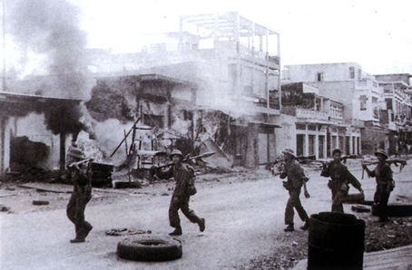
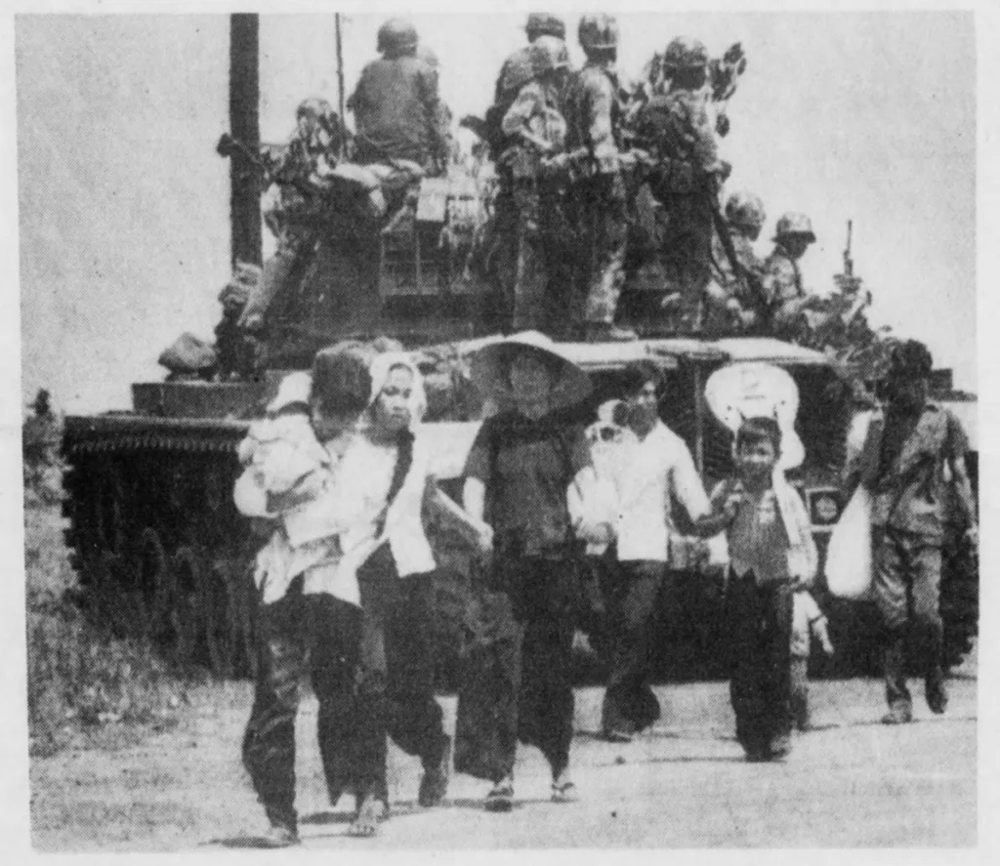
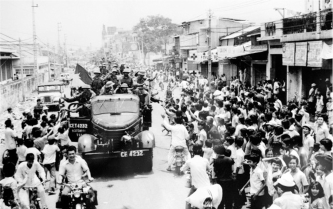

Bạn là một pháo thủ trẻ trong Lữ đoàn Tăng — Thiết giáp 203, Quân đoàn 2 — không nhìn chiến dịch từ bản đồ chỉ huy, mà nếm trải từng chặng hành quân, từng trận đánh, cho đến khoảnh khắc chiếc xe tăng 390 húc đổ cánh cổng Dinh Độc Lập.
📌 Nhân vật "bạn" (pháo thủ) là hư cấu để dễ nhập vai. Các mốc thời gian, đơn vị, và diễn biến xe tăng 390 đều dựa trên tư liệu lịch sử đã kiểm chứng (xem mục 📚 Nguồn tham khảo).
🎖️ 5 chương🎯 Kiến thức + Combo🗺️ Bản đồ tiến quân📔 Sổ tay chiến dịch📖 Có nguồn tham khảo
🪖 CHƯƠNG I · THÁNG 3/1975 — LỆNH XUẤT KÍCH 📖
🪖 ĐÔNG NAM BỘ, THÁNG 3/1975
1
Xuất Kích
2
Xuân Lộc
3
Tiến Quân
4
Vào Nội Đô
5
Dinh Độc Lập
📚 BỐI CẢNHĐầu 1975, sau chiến thắng Tây Nguyên và Huế — Đà Nẵng, Quân đoàn 2 được lệnh hành quân gấp từ miền Trung vào Đông Nam Bộ, chuẩn bị cho trận đánh cuối cùng vào Sài Gòn.
Bạn ngồi trên tháp pháo chiếc xe tăng, mồ hôi ướt đẫm áo lính. Đoàn xe nối đuôi nhau hàng chục cây số trên đường hành quân, bụi đỏ bốc lên mù mịt. Anh trưởng xe gõ vào vai bạn, hét lớn qua tiếng động cơ gầm rú.
TRƯỞNG XE
"Chú mày biết không, lần này khác mọi lần đấy. Không phải đánh rồi rút — lần này đánh là đánh đến Sài Gòn luôn!"🔵 Đoạn hội thoại dựng lại minh họa, không phải ghi chép nguyên văn.
Cả đoàn quân đều cảm nhận được điều gì đó khác lạ trong không khí — sau Tây Nguyên, sau Huế, sau Đà Nẵng, tốc độ sụp đổ của đối phương nhanh đến mức ngay cả những người chỉ huy cấp trên cũng phải điều chỉnh kế hoạch liên tục.
🎓 KIẾN THỨC
Đơn vị nào sau này có chiếc xe tăng 390 — chiếc húc đổ cổng chính Dinh Độc Lập trưa 30/4/1975?
💭 SUY NGẪM
Hành quân hàng trăm km liên tục dưới nắng, bụi, không biết ngày mai sẽ ra sao — điều gì giữ cho một đoàn quân không rã rời giữa đường?
⚡ LỰA CHỌN CỦA BẠN
⚡ TIẾP TỤC
⚔️ CHƯƠNG II · 9–21/4/1975 — TRẬN XUÂN LỘC 📖

⚔️ XUÂN LỘC, LONG KHÁNH
1
Xuất Kích
2
Xuân Lộc
3
Tiến Quân
4
Vào Nội Đô
5
Dinh Độc Lập
📚 BỐI CẢNHXuân Lộc là tuyến phòng thủ then chốt cuối cùng bảo vệ cửa ngõ đông bắc Sài Gòn — trận đánh ác liệt và kéo dài nhất trong toàn chiến dịch, khác hẳn tốc độ thần tốc ở Tây Nguyên và miền Trung.
Khác với những nơi trước đó tan vỡ chỉ sau vài ngày, Xuân Lộc chống cự dữ dội gần hai tuần. Xe tăng của bạn nằm im trong công sự ngụy trang cả buổi, chờ lệnh, nghe rõ tiếng pháo cối nổ liên hồi phía trước.
CHÍNH TRỊ VIÊN ĐẠI ĐỘI
"Đừng nôn nóng. Trận này không giống mấy trận vừa rồi đâu. Chỗ này chúng phòng thủ kỹ, có chuẩn bị hẳn hoi. Ta phải đánh chắc, giữ đội hình, không được tùy tiện."🔵 Đoạn hội thoại dựng lại minh họa.
🎯
CỬA ẢI TRẬN ĐỊA
Trả lời đúng 2 câu hỏi liên tiếp để nắm rõ trận đánh khó nhất chiến dịch!
🎯 CÂU HỎI 1/2
Vì sao trận Xuân Lộc lại quan trọng đến mức được xem là "cửa ngõ cuối cùng" của Sài Gòn?
🎯 CÂU HỎI 2/2
Sau gần hai tuần Xuân Lộc chưa dứt điểm hoàn toàn, Bộ Chỉ huy chiến dịch đã làm gì để không sa lầy?
📖 SỰ THẬT LỊCH SỬTrận Xuân Lộc (9–21/4/1975) là trận đánh phòng ngự — tiến công quyết liệt nhất trước khi Sài Gòn thất thủ. Sau khi tuyến phòng thủ tại đây bị chọc thủng, toàn bộ hệ thống phòng thủ vòng ngoài của Sài Gòn coi như sụp đổ.
💭 SUY NGẪM
Sau hàng loạt chiến thắng thần tốc, gặp một trận đánh kéo dài, ác liệt hơn dự kiến — điều đó thử thách điều gì trong một đội quân đang trên đà thắng lợi?
⚡ TIẾP TỤC
🚛 CHƯƠNG III · 26–29/4/1975 — ĐƯỜNG TIẾN VỀ SÀI GÒN 📖

🚛 QUỐC LỘ 1, CỬA NGÕ SÀI GÒN
1
Xuất Kích
2
Xuân Lộc
3
Tiến Quân
4
Vào Nội Đô
5
Dinh Độc Lập
📚 BỐI CẢNHNgày 21/4, Xuân Lộc được giải quyết. Cùng ngày, Tổng thống Nguyễn Văn Thiệu tuyên bố từ chức. Năm cánh quân lớn đồng loạt xiết vòng vây quanh Sài Gòn từ nhiều hướng — Quân đoàn 2 của bạn tiến theo hướng đông.
Đoàn xe của bạn lăn bánh không nghỉ, ngày lẫn đêm. Hai bên đường, dân chúng đứng nhìn, có người vẫy tay, có người im lặng dò xét. Không khí căng như dây đàn — ai cũng cảm nhận: cuộc chiến đang đi đến những giờ cuối cùng.
MỘT CỤ GIÀ VEN ĐƯỜNG
"Bộ đội ơi, vô Sài Gòn thiệt hả? Bà con chờ ngày này lâu quá rồi con..."🔵 Đoạn hội thoại dựng lại minh họa.
📖 SỰ THẬT LỊCH SỬChỉ trong 55 ngày đêm (4/3 – 30/4/1975), toàn bộ miền Nam được giải phóng. Ngày 21/4/1975, Nguyễn Văn Thiệu tuyên bố từ chức — chính quyền Sài Gòn rơi vào khủng hoảng lãnh đạo ngay trước giờ quyết định.
🎓 KIẾN THỨC
Chiến dịch giải phóng Sài Gòn được chính thức đặt tên là Chiến dịch Hồ Chí Minh vào ngày nào?
💭 SUY NGẪM
Với một người lính, cảm giác được người dân ven đường chờ đợi, tin tưởng khác gì với cảm giác chỉ hành quân theo lệnh?
⚡ TIẾP TỤC
🌅 CHƯƠNG IV · SÁNG 30/4/1975 — VÀO NỘI ĐÔ 📖

🌅 CỬA NGÕ SÀI GÒN, SÁNG 30/4
1
Xuất Kích
2
Xuân Lộc
3
Tiến Quân
4
Vào Nội Đô
5
Dinh Độc Lập
📚 BỐI CẢNHSáng 30/4, các cánh quân đồng loạt tiến vào nội đô Sài Gòn từ mọi hướng. Một số nơi vẫn còn giao tranh lẻ tẻ, nhưng phần lớn tuyến phòng thủ đã tan rã sau khi Dương Văn Minh lên thay chỉ vài ngày trước.
Xe tăng của bạn tiến qua những con đường vắng lạ thường so với hình dung. Có đoạn ngổn ngang quân trang, giày, mũ sắt bị vứt lại dọc đường — dấu hiệu một đội quân đang tan rã chứ không phải đang chiến đấu.
TRƯỞNG XE
"Nhìn kìa — họ bỏ chạy hết rồi. Đường này thông, cứ theo đội hình mà tiến, đừng chủ quan nhưng cũng đừng chần chừ!"🔵 Đoạn hội thoại dựng lại minh họa.
📖 SỰ THẬT LỊCH SỬSáng 30/4/1975, năm cánh quân Giải phóng đồng loạt xiết chặt vòng vây, tiến vào nội đô Sài Gòn từ nhiều hướng gần như đồng thời — khiến quân đội Sài Gòn không kịp tổ chức phòng thủ có hệ thống.
🎓 KIẾN THỨC
Ai là Tổng thống cuối cùng của chính quyền Sài Gòn, người tuyên bố đầu hàng trưa 30/4/1975?
💭 SUY NGẪM
Đi qua một thành phố gần như bỏ trống thay vì một chiến trường — cảm giác đó chắc rất khác với những gì bạn tưởng tượng về "trận đánh cuối cùng"?
⚡ TIẾP TỤC
🏛️ CHƯƠNG V · 10H45, 30/4/1975 — CỔNG DINH ĐỘC LẬP 📖
🏛️ DINH ĐỘC LẬP, TRƯA 30/4/1975
1
Xuất Kích
2
Xuân Lộc
3
Tiến Quân
4
Vào Nội Đô
5
Dinh Độc Lập
📚 BỐI CẢNHĐoàn xe tăng của Lữ đoàn 203 tiến đến khu vực trung tâm. Trong đoàn có chiếc xe tăng mang số hiệu 390 — chiếc sẽ đi vào lịch sử chỉ vài phút sau.
Xe của bạn đi ngay sau đoàn dẫn đầu. Phía trước, cánh cổng sắt to lớn của Dinh Độc Lập hiện ra cuối đại lộ. Không một tiếng súng nào vang lên nữa — chỉ có tiếng xích sắt nghiến trên mặt đường và tim bạn đập dồn.
📖 SỰ THẬT LỊCH SỬ — ĐÃ KIỂM CHỨNGĐúng 10 giờ 45 phút ngày 30/4/1975, xe tăng mang số hiệu 390 húc đổ cánh cổng chính của Dinh Độc Lập, tiến thẳng vào sân dinh. (Nhiều năm sau, các nhà nghiên cứu xác định chính xe 390 — không phải xe 843 như một số tài liệu ban đầu ghi — là chiếc húc cổng chính). Đến 11 giờ 30 phút, Trung úy Bùi Quang Thận cắm lá cờ Mặt trận Dân tộc Giải phóng lên nóc dinh.
Không ai trong đoàn quân reo hò ngay lúc đó. Chỉ có một khoảng lặng ngắn — rồi tiếng vỗ tay, tiếng cười, có người bật khóc. 21 năm chia cắt, khép lại trong chưa đầy một giờ đồng hồ.— Diễn biến trưa 30/4/1975, tổng hợp từ tư liệu lịch sử
🎓 KIẾN THỨC CUỐI
Ai là người tuyên bố đầu hàng vô điều kiện của chính quyền Sài Gòn trên đài phát thanh trưa 30/4/1975?
💭 SUY NGẪM
Sau 55 ngày đêm hành quân, chiến đấu — khoảnh khắc chiến tranh kết thúc lại diễn ra trong im lặng chứ không phải reo hò ngay. Vì sao có lẽ lại như vậy?
⚡ HOÀN THÀNH
⭐
THỐNG NHẤT — 30/4/1975!
0 điểm
—
Bạn đã đi trọn hành trình cùng người pháo thủ Lữ đoàn 203, từ lệnh xuất kích đến khoảnh khắc xe tăng 390 húc đổ cổng Dinh Độc Lập.
🗺️ TUYẾN TIẾN QUÂN 55 NGÀY ĐÊM
Sơ đồ cách điệu đường tiến quân của Quân đoàn 2 — không theo tỷ lệ địa lý thật.
📔 SỔ TAY CHIẾN DỊCH CỦA BẠN
📚 HAI ĐIỀU ĐÁNG NHỚ1. TỐC ĐỘ THẦN TỐC KHÔNG PHẢI NGẪU NHIÊN
55 ngày đêm giải phóng cả miền Nam là kết quả của việc nắm bắt đúng thời cơ chiến lược, kết hợp đánh nhanh với điều chỉnh linh hoạt khi gặp trận đánh khó như Xuân Lộc.
2. LỊCH SỬ ĐƯỢC LÀM NÊN TỪ NHỮNG CON NGƯỜI CỤ THỂ
Phía sau cái tên "Chiến dịch Hồ Chí Minh" là hàng vạn người lính cụ thể như "bạn" trong câu chuyện — mỗi người mang theo mệt mỏi, hy vọng và cả nỗi sợ riêng, trên con đường tiến về một điểm hẹn lịch sử.
Lịch sử Việt Nam, Viện Sử học — tập Kháng chiến chống Mỹ 1954–1975
Tư liệu chiến dịch Hồ Chí Minh — Bảo tàng Lịch sử Quân sự Việt Nam
Diễn biến trận Xuân Lộc, chiến dịch giải phóng Sài Gòn — Tổng cục Chính trị QĐNDVN
Ghi chú: nhân vật "bạn" (pháo thủ) là hư cấu để nhập vai; các mốc thời gian, đơn vị (Lữ đoàn 203), xe tăng 390, và diễn biến trưa 30/4/1975 là sự kiện đã kiểm chứng. Đoạn hội thoại được dựng lại minh họa, không phải nguyên văn ghi chép.